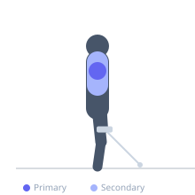

Exercise guide / Cable Lateral Raise
Cable Lateral Raise
The cable lateral raise is a unilateral shoulder isolation exercise using a low cable pulley. Unlike the dumbbell version, the cable maintains constant tension throughout the full range of motion, including at the bottom where gravity removes load on a dumbbell. This makes it particularly effective for sustained lateral deltoid stimulation.
Primary muscles
deltoid lateral
Secondary muscles
trapezius upper
Stabilizers
supraspinatus
Equipment
Cable Machine (Low Pulley)


Starting position
- Stand beside a low cable pulley with the cable attachment in the hand farthest from the machine. The cable passes in front of your body. Hold a natural stance with the arm hanging at the side.
Setup
- Set the pulley to the lowest position. Attach a single handle. Stand far enough from the stack to feel tension at the bottom of the movement.
Steps
- With a slight elbow bend, raise the arm out to the side away from the cable machine.
- Raise until the upper arm is parallel to the floor.
- Lower under control, maintaining tension on the cable throughout.
Coaching cues
- Lead with the elbow, not the wrist
- Squeeze the lateral delt at the top of each rep
Breathing
- Exhale on the raise, inhale on the return.
Range of motion
- Full bottom position with arm at side, raise to parallel at top.
Tempo
- 2-1-3-0
Common mistakes
- Standing too close to the machine, losing the constant tension benefit
- Raising the arm too high above parallel
Safety
- Keep the working shoulder's path controlled — avoid shrugging the trap to lift the arm
Training
- hypertrophy: 12–20 reps
- hypertrophy: 3–4 sets
- Rest: {'hypertrophy': 60}